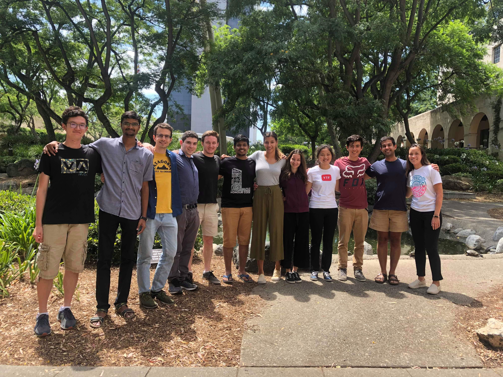

A running record of mentorship, tutoring, and community work across Caltech, Harvard, MIT, and the University of Oklahoma. Most of this is one-on-one — undergraduate research, STEM advising, graduate-school prep, and course tutoring.

As a postdoctoral scholar I have and continue to mentor students participating in Caltech's flagship undergraduate research program. A selection of projects we've explored together:
While a graduate student at MIT, for two years I resided in Cabot House, an undergraduate residence at Harvard University, as Resident Tutor among 400 undergraduates. I primarily interacted with students pursuing STEM concentrations, advised them on academic and non-academic career paths, assisted on graduate-school applications, scholarships, fellowships, and research internships, and tutored in math, physics, and engineering.
As an undergraduate scholar in the Multicultural Engineering Program — the flagship program at OU's College of Engineering for diversity and inclusion — I tutored and mentored students in a variety of math, physics, and engineering subjects.